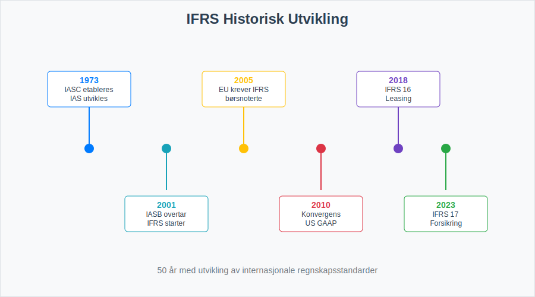
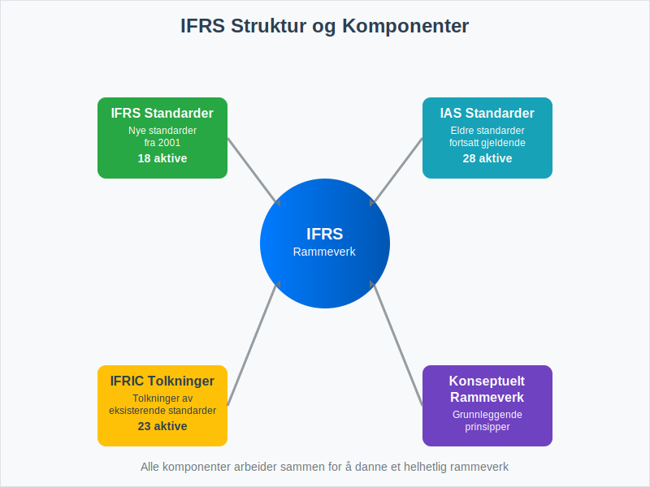
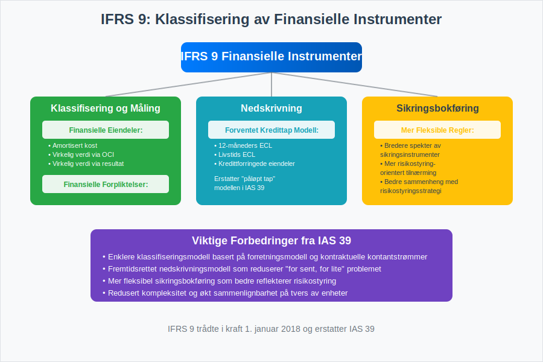
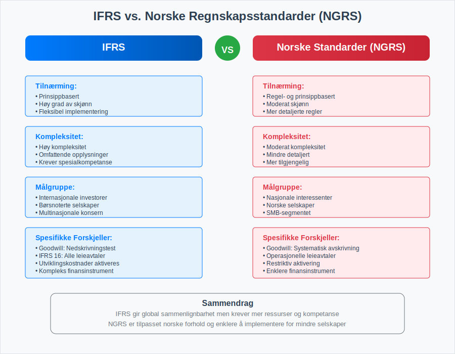
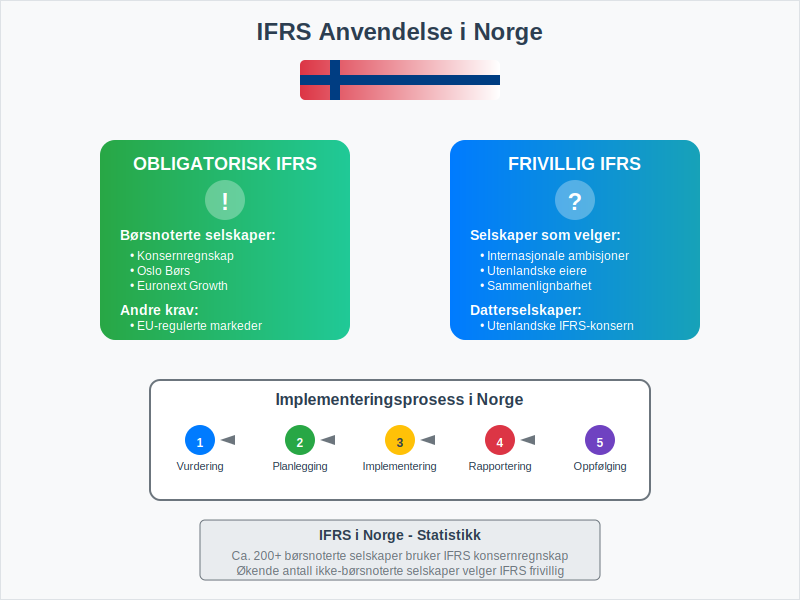
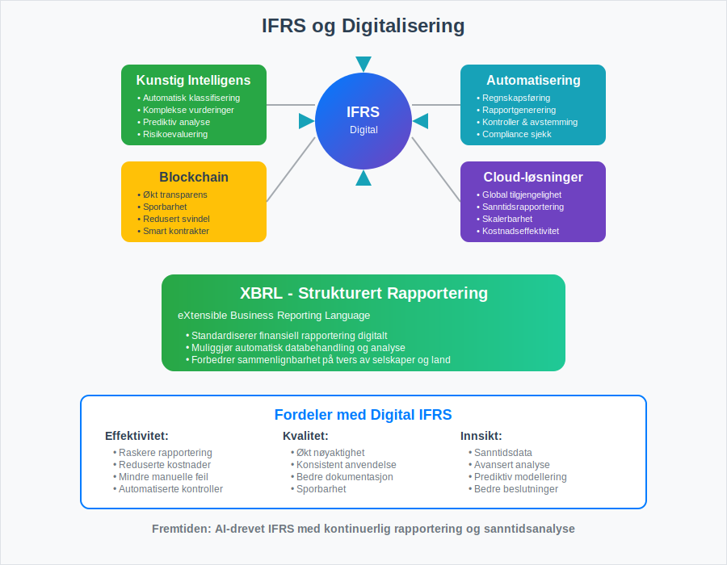

IFRS (International Financial Reporting Standards) er et sett med globale regnskapsstandarder utviklet av International Accounting Standards Board (IASB) for å sikre konsistent, transparent og sammenlignbar finansiell rapportering på tvers av land og bransjer. Disse standardene brukes i dag av over 140 land og representerer det mest omfattende rammeverket for internasjonal finansiell rapportering.
IFRS bygger på prinsippbaserte standarder som gir fleksibilitet i implementering, men krever samtidig profesjonell dømmekraft og grundig forståelse av de underliggende prinsippene. For norske selskaper som opererer internasjonalt eller er notert på børs, er forståelse av IFRS avgjørende for å sikre god regnskapsskikk og overholdelse av internasjonale krav.
Historisk Utvikling og Bakgrunn
IFRS har sin opprinnelse i International Accounting Standards (IAS), som ble utviklet fra 1973 av International Accounting Standards Committee (IASC). I 2001 overtok IASB ansvaret og begynte å utvikle IFRS som en modernisert versjon av de eksisterende standardene.

Viktige Milepæler i IFRS-utviklingen
- 1973: IASC etableres og begynner arbeidet med IAS
- 2001: IASB overtar og starter utviklingen av IFRS
- 2005: EU krever IFRS for børsnoterte selskaper
- 2010: Konvergens med US GAAP intensiveres
- 2018: IFRS 16 (Leasing) trer i kraft
- 2023: IFRS 17 (Forsikringskontrakter) implementeres
IFRS’ Struktur og Komponenter
IFRS består av flere komponenter som sammen danner et helhetlig rammeverk for finansiell rapportering:

Hovedkomponenter
| Komponent | Beskrivelse | Antall Standarder |
|---|---|---|
| IFRS Standarder | Nye standarder utgitt av IASB fra 2001 | 18 aktive standarder |
| IAS Standarder | Eldre standarder som fortsatt gjelder | 28 aktive standarder |
| IFRIC Tolkninger | Tolkninger av eksisterende standarder | 23 aktive tolkninger |
| Konseptuelt Rammeverk | Grunnleggende prinsipper og konsepter | 1 rammeverk |
Det Konseptuelle Rammeverket
Det konseptuelle rammeverket danner grunnlaget for alle IFRS-standarder og definerer:
- Formålet med finansiell rapportering
- Kvalitative karakteristika ved nyttig finansiell informasjon
- Definisjon og anerkjennelse av regnskapselementer
- Måling av regnskapselementer
- Presentasjon og opplysninger
Sentrale IFRS-Standarder
IFRS 1: Første gangs anvendelse av IFRS
Denne standarden gir veiledning for selskaper som går over fra nasjonale regnskapsstandarder til IFRS for første gang. Den sikrer at overgangen skjer på en konsistent og sammenlignbar måte.
IFRS 9: Finansielle Instrumenter
IFRS 9 erstatter IAS 39 og dekker:
- Klassifisering og måling av finansielle eiendeler og forpliktelser
- Nedskrivningsmodell basert på forventet kredittap
- Sikringsbokføring med mer fleksible regler

IFRS 15: Inntekt fra Kontrakter med Kunder
Denne standarden etablerer en femtrinns modell for inntektsføring:
- Identifiser kontrakten med kunden
- Identifiser ytelsesforpliktelsene i kontrakten
- Bestem transaksjonsbeløpet
- Allokér transaksjonsbeløpet til ytelsesforpliktelsene
- Innregn inntekt når ytelsesforpliktelsen oppfylles
IFRS 16: Leieavtaler
IFRS 16 endret fundamentalt regnskapsføringen av leieavtaler ved å kreve at alle vesentlige leieavtaler føres i balansen.
IFRS vs. Nasjonale Standarder
Sammenligning med Norske Regnskapsstandarder
| Aspekt | IFRS | Norske Standarder (NRS) |
|---|---|---|
| Tilnærming | Prinsippbasert | Regel- og prinsippbasert |
| Kompleksitet | Høy | Moderat |
| Fleksibilitet | Høy | Moderat |
| Detaljnivå | Omfattende opplysninger | Mindre detaljert |
| Målgruppe | Internasjonale investorer | Nasjonale interessenter |

Hovedforskjeller i Praksis
- Goodwill: IFRS krever årlig nedskrivningstest, mens norske standarder tillater systematisk avskrivning
- Utviklingskostnader: IFRS tillater aktivering under visse betingelser, norske standarder er mer restriktive
- Leieavtaler: IFRS 16 krever balanseføring av alle vesentlige leieavtaler
- Finansielle instrumenter: IFRS har mer komplekse regler for klassifisering og måling
Implementering av IFRS i Norge
IFRS er en sentral del av det norske regnskapsstandardsystemet, som kombinerer internasjonale standarder med nasjonale tilpasninger for å møte både globale og lokale rapporteringsbehov.
Hvem må bruke IFRS?
I Norge er IFRS obligatorisk for:
- Børsnoterte selskaper (konsernregnskap) - disse må også publisere kvartalsrapporter i henhold til IFRS-standarder
- Selskaper som frivillig velger IFRS
- Datterselskaper av utenlandske IFRS-rapporterende selskaper

Overgangsprosessen
Overgangen til IFRS krever omfattende planlegging og ressurser:
- Prosjektplanlegging og ressursallokering
- Gap-analyse mellom eksisterende praksis og IFRS
- Systemtilpasninger og IT-implementering
- Opplæring av regnskaps- og ledelsespersonell
- Parallellkjøring og testing
- Første IFRS-regnskap med sammenligningstall
Fordeler og Utfordringer med IFRS
Fordeler
- Global sammenlignbarhet av finansiell informasjon
- Økt transparens og kvalitet i finansiell rapportering
- Bedre tilgang til internasjonale kapitalmarkeder
- Reduserte kostnader for multinasjonale selskaper
- Harmonisering av regnskapspraksis på tvers av land
Utfordringer
- Høye implementeringskostnader og kompleksitet
- Behov for spesialisert kompetanse og kontinuerlig oppdatering
- Økt skjønnsmessige vurderinger og profesjonell dømmekraft
- Kulturelle og juridiske tilpasninger i ulike land
- Hyppige endringer og oppdateringer av standardene
IFRS og Digitalisering
Moderne Teknologi og IFRS
Digitalisering har betydelig påvirkning på IFRS-implementering og -rapportering:

- Automatisering av regnskapsføring og rapportering
- Kunstig intelligens for komplekse vurderinger og estimater
- Blockchain-teknologi for økt transparens og sporbarhet
- Cloud-baserte løsninger for global tilgjengelighet
- Sanntidsrapportering og kontinuerlig overvåking
XBRL og Strukturert Rapportering
XBRL (eXtensible Business Reporting Language) er en global standard for digital forretningsrapportering som:
- Standardiserer finansiell rapportering digitalt
- Muliggjør automatisk databehandling og analyse
- Reduserer feil og øker effektivitet
- Forbedrer sammenlignbarhet på tvers av selskaper
Fremtidige Utviklingstrender
Pågående Prosjekter og Endringer
IASB arbeider kontinuerlig med å forbedre og oppdatere IFRS-standardene:
| Prosjekt | Status | Forventet Implementering |
|---|---|---|
| Goodwill og Nedskrivning | Under utvikling | 2025-2026 |
| Primære Finansielle Instrumenter | Forskningsfase | 2026-2027 |
| Bærekraftsrapportering | Konsultasjon | 2024-2025 |
| Kryptovaluta og Digitale Eiendeler | Tidlig fase | 2025-2026 |
ESG og Bærekraftsrapportering
Økende fokus på miljø, sosiale forhold og selskapsstyring (ESG) påvirker IFRS-utviklingen:
- Klimarelaterte opplysninger integreres i finansiell rapportering
- Bærekraftsmålinger og -indikatorer standardiseres
- Integrert rapportering kombinerer finansiell og ikke-finansiell informasjon
Praktiske Råd for IFRS-Implementering
Suksessfaktorer
For vellykket IFRS-implementering anbefales følgende tilnærming:
- Tidlig planlegging og prosjektledelse
- Toppledelsens forpliktelse og støtte
- Kompetanseutvikling og kontinuerlig opplæring
- Systemintegrasjon og teknisk infrastruktur
- Ekstern rådgivning ved behov
Vanlige Fallgruver
- Undervurdering av tid og ressurser
- Mangelfull opplæring av nøkkelpersonell
- Utilstrekkelig testing og kvalitetssikring
- Dårlig kommunikasjon med interessenter
- Manglende oppfølging etter implementering
Konklusjon
IFRS representerer den globale standarden for finansiell rapportering og er avgjørende for selskaper som opererer i det internasjonale markedet. Mens implementering kan være kompleks og ressurskrevende, gir IFRS betydelige fordeler i form av økt transparens, sammenlignbarhet og tilgang til globale kapitalmarkeder.
For norske selskaper som vurderer IFRS, er det viktig å forstå både mulighetene og utfordringene. Grundig planlegging, riktig kompetanse og systematisk tilnærming er nøkkelen til vellykket implementering.
Fremtiden for IFRS vil preges av fortsatt harmonisering, digitalisering og integrering av bærekraftsrapportering. Selskaper som investerer i IFRS-kompetanse i dag, posisjonerer seg godt for fremtidens krav til finansiell rapportering.
For å sikre korrekt implementering og overholdelse av IFRS-kravene, anbefales det å arbeide tett med kvalifiserte regnskapsførere og revisorer som har spesialisert kunnskap om internasjonale regnskapsstandarder. Dette sikrer at bokføringen og den finansielle rapporteringen oppfyller både nasjonale og internasjonale standarder.